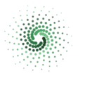

_ (_)_ __ ___ _ __ ___ | | '_ \/ __| '__/ __| | | | | \__ \ | | (__ |_|_| |_|___/_| \___|

A local code and document knowledge index with a tracked engineering workflow. Ask grounded questions, generate architecture documents, and take features or bug fixes through design, review, implementation, and code review using Claude Code, Codex, or your IDE.
Storage and embeddings stay local. When you select cloud reasoning, relevant
context is sent through your existing claude / codex CLI login.
Background document summaries also follow the configured model tier. No cloud LLM API keys required.
start with a question or a change
In an MCP-connected assistant, try:
- “What depends on this module, and what could break if I change it?”
- “What decisions and constraints do our design documents record?”
- “Generate a dependency diagram and explain the main components.”
- “Plan and implement this feature through the tracked workflow.”
insrc_analyze_step retrieves structured evidence while keeping multi-turn reasoning
in your assistant session. Results report sources and retrieval limitations; coverage depends on the index.
what's inside
Indexer
tree-sitter parsing for TS/JS, Python, Go, Java, Scala & Kotlin into a typed entity/relation graph with deterministic IDs.
architectureDaemon & IPC
a background process that owns every DB, exposed over a JSON-RPC Unix socket. CLI, MCP & IDE all talk to it.
architectureStorage
LMDB-backed graph layer + LanceDB vectors for ANN search + DuckDB for the data-driver query tools.
architecture~110 built-in tools
file · git · shell · http · web · gh · k8s · pkg · ssh · test · graph · db · data · code · cloud capability wrappers.
toolsProviders
Ollama for local reasoning and embeddings, ONNX for embedded local embeddings, and CliProvider wrapping the claude + codex CLIs. No REST.
Analyze framework
20 exploration types + a context builder that returns a verified 7-layer, citation-grounded bundle.
analyzeWorkflow framework
Brainstorm → scope triage → design → plan → build → code review, with shorter routes for smaller changes, explicit approvals, and a GitHub tracker.
workflowBugfix triage
a defect fix is a first-class category: an issue stage captures reproduction + root cause, a tiered locator attaches it to the code it corrects, then it's scope-routed to build.
Document knowledge
Index documentation and sections, maintain summaries, and retrieve recorded decisions, constraints, and related prose alongside code evidence.
document retrievalArchitecture documents
Offline HTML with graph-derived type structures, dependency diagrams, call sequences, and narrative walkthroughs.
documentation generationWork inside your editor
VS Code chat preview, pending-document review, and a delivery board, plus a companion JetBrains integration.
editor integrationInteractive CLI
a full-screen ink (React) TUI with Daemon / Repos / Workflows / Setup / Tiers / Debug panes.
cliat a glance
Everything routes through one daemon. Clients never open a database directly — the daemon is the single owner of the graph, the vectors and the tool registry.
getting started
Install with Git and Node.js ≥22.13.0. Choose local Ollama or ONNX embeddings, then use a local reasoning model or your authenticated Claude / Codex CLI.
# install and start the daemon
curl -fsSL https://github.com/insors-ai/insrc/releases/latest/download/insrc-daemon-install.sh | bash
# add a repository in Repos (a), then let indexing finish
"$HOME/.insrc/daemon/scripts/insrc"
# register the MCP server with your assistant
claude mcp add insrc --scope user -- node "$HOME/.insrc/daemon/out/bin/insrc-mcp.js"
# or:
codex mcp add insrc -- node "$HOME/.insrc/daemon/out/bin/insrc-mcp.js"principles
- Local-first. Embeddings are computed locally by Ollama or ONNX; the graph + vectors live on your disk under
~/.insrc/. - No direct cloud REST. Cloud LLM access happens only through the installed
claudeandcodexCLI binaries — auth & quota stay with your CLI OAuth sessions. - Accuracy is primary; cost is the least priority. Given an accurate-but-expensive path and a cheap-but-lossy one, insrc chooses accuracy.
- No raw file dumps. Context is always structured entity summaries + relations from the graph, never a blind file paste.